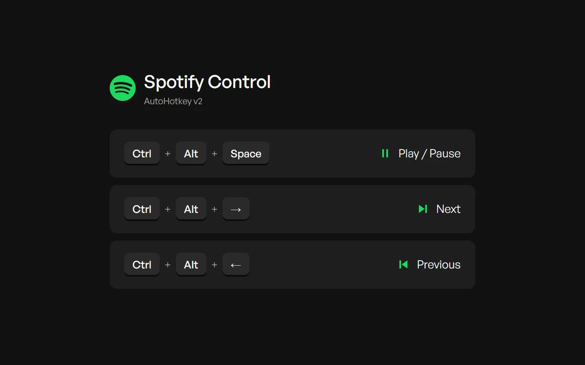

Desenvolvedor full-stackFull-stack developer
 Spotify Control
Spotify Control
Controle o Spotify de qualquer lugar do Windows com atalhos globais, sem trazer a janela para a frente.Control Spotify from anywhere in Windows with global shortcuts, without bringing its window to the front.
 0
0

O que fazWhat it does
- Ctrl + Alt + Espaço: tocar / pausar.
- Ctrl + Alt + Space: play / pause.
- Ctrl + Alt + →: próxima música.
- Ctrl + Alt + →: next track.
- Ctrl + Alt + ←: música anterior.
- Ctrl + Alt + ←: previous track.
- Funciona com o Spotify minimizado ou na bandeja do sistema.
- Works with Spotify minimized or in the system tray.
- Instância única, e se o Spotify não estiver aberto os atalhos simplesmente não fazem nada.
- Single instance, and if Spotify isn't running the shortcuts simply do nothing.
Como funcionaHow it works
O script acha o processo do Spotify, pega a janela dele (inclusive escondida) e manda a mensagem WM_APPCOMMAND do Windows, a mesma que as teclas de mídia do teclado enviam.The script finds the Spotify process, gets its window (hidden ones included) and sends it the Windows WM_APPCOMMAND message, the same one a keyboard's media keys send.
Ctrl + Alt + → → AutoHotkey v2 → WM_APPCOMMAND → Spotify.exe (mesmo minimizado)
Não atrapalha outros players. O comando vai direto para o Spotify, então o YouTube ou outra música aberta no navegador continuam como estão.Doesn't touch other players. The command goes straight to Spotify, so YouTube or other music in the browser stays as it is.